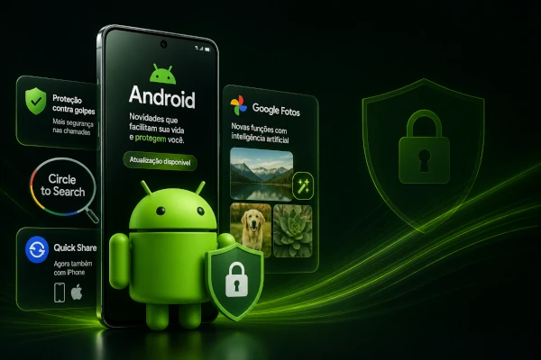
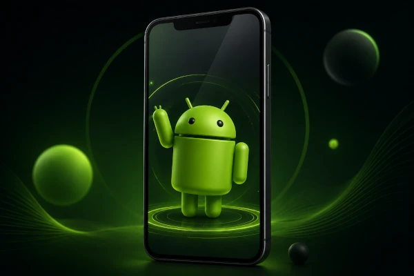

Atualizando Você
Google apresenta o Android 17 com foco em Inteligência Artificial
O Google anunciou oficialmente o Android 17 durante o evento The Android Show: I/O Edition 2026. A nova versão traz integração mais profunda com o Gemini, melhorias de segurança, recursos inteligentes para escrita, compartilhamento de arquivos entre Android e iPhone e diversas otimizações de desempenho. Os primeiros aparelhos a receber a atualização serão os smartphones Pixel.
Android recebe pacote de novidades com melhorias de segurança
O Google lançou uma atualização com novos recursos para celulares Android. Entre as novidades estão uma proteção mais eficiente contra golpes telefônicos, melhorias no Circle to Search, integração ampliada do Quick Share com dispositivos iPhone e novas funções baseadas em inteligência artificial para o Google Fotos.

Mascote do Android ganha destaque em nova identidade visual
Durante a divulgação do Android Show 2026, o tradicional robô verde do Android voltou a aparecer em destaque no material oficial do Google. O mascote foi apresentado com um visual moderno, reforçando a identidade da marca e acompanhando a evolução do sistema operacional e dos novos recursos de IA anunciados para o Android 17.
